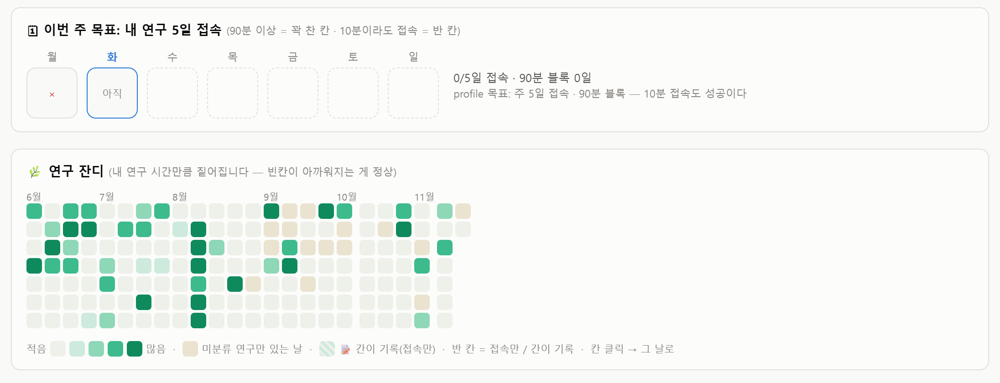

졸업까지,
퀘스트처럼
구현 현황과 앞으로의 계획
기록 → 분류 → 피드백 흐름은 동작,
화면은 직접 쓰면서 개선 중
화면은 직접 쓰면서 개선 중
2026.11.10.(화) · 통합적프로토타이핑 · 권수현
구현 현황
계획 대비 진행아이디어 발표(10.27.)의 구현 계획 기준
| 계획한 것 | 계획 주차 | 구현 내용 | 상태 |
|---|---|---|---|
| 폰 기록 앱 (PWA) | 9~10주차 | 코치 앱 v33 배포 · 버튼 입력, 타이머, 예약 알림 | 완료 |
| 내 연구 / 당장 할 일 분류 | 9~10주차 | 미래 투자 · 생산 대시보드에서 자동 집계 | 완료 |
| 퀘스트 → 작은 행동 | 11주차 | 오늘의 약속, 첫 동작 제안, 5초 카운트다운큰 목표에서 퀘스트로 이어지는 계층 화면은 미구현 | 진행 중 |
| AI 피드백 | 12~13주차 | 아침 · 저녁 브리핑으로 이번 주와 학기 누적 전달현재는 누적 공부 시간과 기록만 전달 · 향후 연구와 생산적인 일에 집중하도록 유도하는 피드백으로 고도화 고민 중 | 완료 |
| AI 코치 대화 | 12~13주차 | 하루 · 쉼 · 운동 · 연구 코치 4종, 대화 요약 저장 | 완료 |
| 논문 노트 연동 | – | 하이라이트한 PDF 수집, 읽은 논문 수 브리핑 반영 | 완료 |
지금은 11주차 · 본인 사용 시작, AI 피드백은 계획보다 먼저 동작
2
구현 현황
폰에서 기록하는 화면
3
구현 현황
연구 습관 형성을 위한 대시보드

내 연구 대시보드
내 연구를 한 날만 칸이 진해지는 연구 잔디, 이번 주 5일 접속 목표
아침 · 저녁 브리핑
이번 주와 학기 누적을 메신저로 전달
공부 85.8h · 내 연구 34.9h (11.9. 기준)
공부 85.8h · 내 연구 34.9h (11.9. 기준)
기록이 없는 날은 빈칸 그대로 표시하여 현재 연구 접속 현황을 확인 가능
4
어려운 점
행동하게 만드는 UI
| 화면 | 1단계 | 2단계 | 최종(현재) |
|---|---|---|---|
| 달성 표시 | 최근 14일 잔디 | 한 주 단위로 보이지 않는 달성 | 이번 주 7칸 도장, 문구 도장에서 스마일 도장으로 |
| 몸 상태 입력 | 글로 적는 칸 | 폰에서 매번 적어야 하는 부담 | 정해진 값은 버튼과 숫자 칸, 자유 서술만 글 칸 |
| 약속 결과 | 누른 시각을 그대로 기록 | 나중에 누르면 실제 시각과 어긋남 | 시작 시각 선택, 끝 시각 직접 입력, 버튼 3개 배치 |
| 기록 유지 | 기록은 사용자 몫 | 바쁜 시기에 기록부터 중단개강 후 70일 중 기록 33일 | 미해결 예약 알림과 첫 동작 제안으로 시도 중 |
기능 구현보다 어려운 일은 행동을 유도하는 화면 설계 · 직접 쓰면서 계속 수정 중
5
앞으로의 계획
남은 구현과 확인 방법
11~12주차
퀘스트 계층 화면
큰 목표 → 퀘스트 → 작은 행동을 한 화면에서 연결
12~13주차
부담 없이 지속하는 기록
알림 문구와 시각 조정, 한 번 눌러 끝나는 기록
11~14주차
4주 본인 사용과 전후 비교
쓰면서 고친 화면 정리, 같은 기준으로 지표 재계산
확인 지표아이디어 발표 때의 값과 4주 사용 뒤의 값을 같은 기준으로 비교
내 연구 비율
생산 시간 중
15%10.20.
→?4주 뒤
퀘스트 달성 수
주별 완료 개수
0개10.20.
→?4주 뒤
기록한 날 수
학기 중 50일 중
20일10.20.
→?4주 뒤
향후
프로토타입
→다른 대학원생과 함께 사용
→상용화 가능성 탐색
6